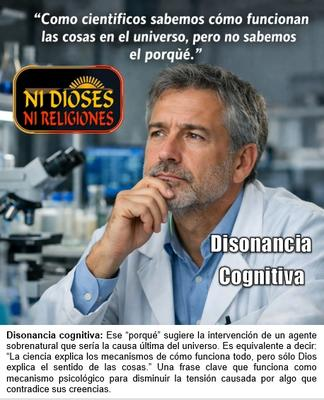

Uno de los conceptos más útiles para entender la persistencia de creencias irracionales en personas inteligentes, es sin duda la disonancia cognitiva, término acuñado por el psicólogo social estadounidense Leon Festinger (1919-1989)[1], tras analizar casos como el de Dorothy Martin (1900–1992)[2], una supuesta médium estadounidense, líder de una secta apocalíptica, quien afirmó en 1954 haber recibido mensajes de extraterrestres de un planeta llamado Clarión, anunciando un «diluvio universal» para el 21 de diciembre de aquel mismo año. Sus seguidores abandonaron sus trabajos, familias y posesiones esperando el fin del mundo, pero no ocurrió nada.


Sin embargo ella, lejos de admitir su error, anunció una nueva «revelación»: los extraterrestres habían decidido cancelar el diluvio gracias a la fe demostrada por su pequeño grupo de seguidores. Conocidos informalmente como The Seekers (Los buscadores)[2], este grupo se convirtió en el tema del influyente estudio de psicología social When Prophecy Fails (Cuando la profecía falla), una obra clásica de Leon Festinger, Henry Riecken y Stanley Schachter, publicada en 1956[3].
Dorothy encontró así una forma de justificar «racionalmente» aquella mentira que parecía haberse creído ella misma. Pero lo más paradójico es que sus seguidores, lejos de sentirse frustrados, se sintieron orgullosos de haber «salvado a la humanidad».
Fue así que, con base en sus observaciones, Festinger definió la disonancia cognitiva[4] como una condición en que una persona sostiene simultáneamente ideas, creencias o actitudes incompatibles entre sí, o cuando la realidad contradice una convicción profundamente arraigada. En esos casos, la persona muchas veces, en lugar de abandonar la creencia errónea, la defiende con más fuerza, rechaza la evidencia contraria, e introduce otra idea igualmente arbitraria, que le sirve de explicación para estabilizar el conjunto. Esa tercera idea que sirve para armonizar las otras, es una especie de hipótesis ad hoc que evita al creyente modificar sus convicciones. Es decir, no modifica la creencia principal; lo que modifica es la interpretación de los hechos.
Vemos la disonancia cognitiva en acción en el caso Dorothy Martin. Se caracteriza por tres fases:
Creencia inicial: «El mundo se acabará el 21 de diciembre».
Realidad: El mundo no se acabó.
Nueva creencia ad hoc: «Nuestra fe evitó el desastre».
Esta tercera creencia sirve como recurso psicológico para mantener intacta la primera.
En consecuencia, según Festinger, la disonancia cognitiva (conocida también como la teoría del autoengaño)[5] es un fenómeno que motiva a las personas a aferrarse a sus creencias, incluso cuando éstas son incompatibles con otras formas de pensamiento que ellas mismas tienen. Es un fenómeno muy estudiado actualmente por la psicología.
Una disonancia cognitiva aparece cuando al creyente le interesa por algún motivo, esencialmente de carácter emocional, mantenerse aferrado a una mentira que él quiere creer que es verdad. Y según observó Festinger, cuando una persona defiende su creencia, su primera reacción es rechazar cualquier argumento que la invalide. De hecho, cuanto mayor es el interés en mantener la creencia, mayor será el esfuerzo irracional que realice por defenderla. Y si el debate de las ideas del creyente se lleva al plano personal, éste reaccionará aumentando su disonancia cognitiva, encontrando siempre una evasiva a su alcance. Según observó Festinger, cuanto mayor es el compromiso emocional con una creencia, mayor será el esfuerzo irracional para defenderla.
Pero el concepto de disonancia cognitiva nos sirve además para respondernos esta pregunta que solemos hacer: ¿Cómo es posible que una persona racional tenga creencias irracionales? —Pues, resulta que la racionalidad humana no es puramente lógica, es profundamente emocional. Y la disonancia aparece cuando abandonar una creencia implica:
Reconocer que uno fue engañado.
Admitir pérdida de tiempo o sacrificios inútiles.
Enfrentar el rechazo social.
Perder identidad o comunidad.
Por otra parte, ser inteligente y tener una profunda preparación académica, no es garantía de ser inmune al error. Por lo que algunos religiosos se equivocan cuando afirman: «Tal científico brillante cree en Dios, por tanto Dios existe». Sin darse cuenta, incurren en dos errores lógicos: la falacia de autoridad (ad verecundiam) y la falacia ad hominem.
No comprenden algo básico: una persona puede ser extraordinariamente inteligente y muy preparada en física, matemáticas o medicina, pero a la vez estar equivocada en su cosmovisión. Porque la inteligencia no elimina el adoctrinamiento infantil, el apego emocional, el miedo existencial o la presión social. De hecho, personas con alto coeficiente intelectual pueden ser especialmente hábiles para construir racionalizaciones sofisticadas que protejan sus creencias.
Por otra parte, Festinger observó también que quienes sostienen creencias irracionales tienden a formar grupos cerrados dentro de los cuales los miembros se refuerzan mutuamente, reinterpretan sus contradicciones, desacreditan a los críticos, y evitan la exposición a evidencia contraria. Crean con esto una burbuja cognitiva donde la disonancia disminuye artificialmente, porque el aislamiento protege la creencia.
Por cierto, muchos ateos se preguntan cómo es posible que personas con altos grados académicos pueden sostener dogmas que son evidentemente absurdos. Y la respuesta psicológica es clara: la mente humana no busca prioritariamente la verdad; busca coherencia emocional e identidad. Como decía el neurocientífico británico Oliver Sacks (1933-2015): «Nuestro cerebro finge, adultera, falsifica; pero tiene buenas razones para hacerlo. Nuestro cerebro es un dispositivo fruto de la selección natural, y está dedicado al servicio de un organismo vivo: nosotros. ¿Y cuál es la meta de todo organismo vivo?, la supervivencia.» Por eso, según explica, «Para nuestro cerebro es más importante contarnos una historia consistente, que contarnos una historia verdadera.»[6]
Por todo esto, cuando una creencia religiosa está ligada a la familia, la cultura, la moral, el sentido de propósito o la comunidad, abandonarla no es un simple cambiar de opinión, es reestructurar la identidad. Como decía el filósofo estadounidense Daniel Dennett (1942-2024): «Simplemente no hay manera cortés de decirle a la gente que ha dedicado su vida a una ilusión.»
La lección psicológica que nosotros podemos rescatar, es que la disonancia cognitiva no es exclusiva de los religiosos, es un mecanismo humano universal. Y por supuesto, también los ateos la experimentamos en ciertas circunstancias. Sin embargo, en el campo religioso, donde las creencias suelen estar blindadas por tradición, autoridad y emociones profundas, la disonancia se vuelve especialmente intensa.
Por eso es que no debemos interesarnos tanto en quién hace una afirmación, sin en qué evidencia la respalda. Porque lo importante no es tanto el mensajero como el mensaje. Aceptar que incluso las personas más brillantes pueden estar equivocadas —especialmente en ideas que nunca eligieron libremente, sino que heredaron desde la infancia— es un paso fundamental hacia la honestidad intelectual.
[Godless Freeman]
Comentarios
Comments powered by Disqus